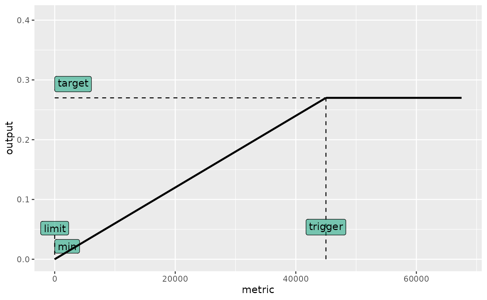
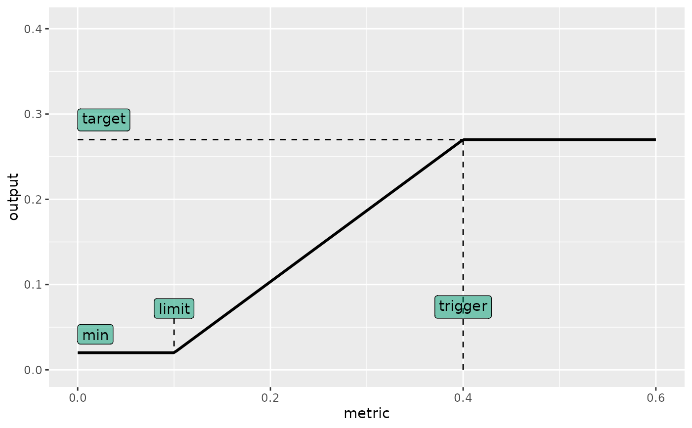
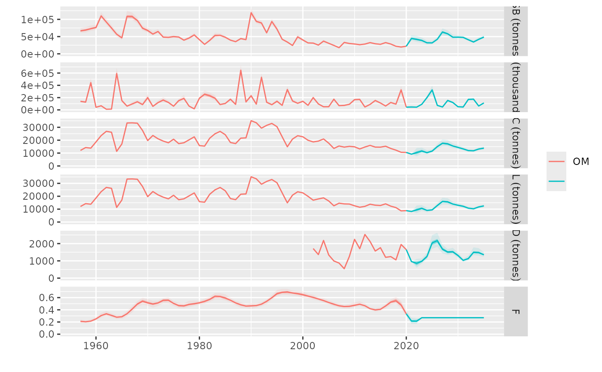

A hockey-stick harvest control rule that sets the value of an output between a minimum and a target, according to that of a metric, compared with a limit and a trigger.
hockeystick.hcr(
stk,
ind,
target,
trigger,
lim = 0,
min = 0,
drop = 0,
metric = "ssb",
output = "fbar",
dlow = NULL,
dupp = NULL,
all = TRUE,
initial = NULL,
args,
tracking,
...
)The 'oem' observation or SA estimation, an FLStock object.
Possible indicators returned by the 'est' step, FLQuants.
The output level applied when the stock metric is at or above the trigger value, numeric or FLQuant.
The stock status or metric value threshold above which the control variable reaches the target value, numeric or FLQuant.
The lower threshold of the stock metric, below which the control rule
applies the minimum allowable value (min), numeric or FLQuant.
Numeric. The minimum allowable control value (e.g., minimum F or catch).
Numeric. A stock metric threshold below which the control variable is forced to min to prevent over-exploitation of severely depleted stocks, numeric or FLQuant
The stock metric to use for the HCR (e.g., "ssb" for spawning-stock biomass), character or function.
Character. The output control variable (e.g., "fbar" for fishing mortality or "catch" for quotas), character.
A limit for the decrease in the output variable, e.g. 0.85 for a maximum decrease of 15%, numeric. No limit is applied if NULL.
A limit for the increase in the output variable, e.g. 1.15 for a maximum increase of 15%, numeric. No limit is applied if NULL.
If TRUE, upper and lower limits (dupp and dlow) are applied unconditionally, otherwise only when metric > trigger, logical.
A list containing dimensionality arguments, passed on by mp().
An FLQuant used for tracking indicators, intermediate values, and decisions during MP evaluation.
Initial value of 'output' to use when applying 'dlow' and 'dupp' limits, numeric of FLQuant.
A list containing elements 'ctrl', a fwdControl object, and 'tracking'. Three elements in tracking report on the steps inside hockeystick.hcr:
decision.hcr
This function implements a hockey-stick shaped harvest control rule (HCR). It is
commonly used to set F or effort, and sometimes catch, from a measure of stock
status, such as estimated SSB or depletion. The function can take any input,
'metric', if it can computed from an FLStock or is returned by the function run
in the 'est' step. The 'output' argument can be set to any quantity that the OM
projection method can understand, e.g. fbar, effort or catch for 'fwd.om'.
The HCR increases the control variable linearly between a lower threshold (lim)
and a trigger point (trigger), and sets it to a target level (target) when the
metric is above the trigger. The decreasing line can be cut at any point ('drop'),
where output values fall to the 'min' level set. See examples below.
The function can also apply optional upper (dupp) and lower (dlow) constraints
to changes in the control variable. These constraints can be applied either
unconditionally (all = TRUE) or only on the stock being above the trigger.
# Example dataset
data(sol274)
#> Warning: namespace ‘dplyr’ is not available and has been replaced
#> by .GlobalEnv when processing object ‘om’
#> Warning: namespace ‘TMB’ is not available and has been replaced
#> by .GlobalEnv when processing object ‘om’
#> Warning: namespace ‘remotes’ is not available and has been replaced
#> by .GlobalEnv when processing object ‘om’
#> Warning: namespace ‘shiny’ is not available and has been replaced
#> by .GlobalEnv when processing object ‘om’
#> Warning: namespace ‘htmlwidgets’ is not available and has been replaced
#> by .GlobalEnv when processing object ‘om’
#> Warning: namespace ‘xtable’ is not available and has been replaced
#> by .GlobalEnv when processing object ‘om’
#> Warning: namespace ‘FLAssess’ is not available and has been replaced
#> by .GlobalEnv when processing object ‘om’
#> Warning: namespace ‘FLSRTMB’ is not available and has been replaced
#> by .GlobalEnv when processing object ‘om’
# Sets up an mpCtrl using hockeystick(fbar~ssb)
ctrl <- mpCtrl(est = mseCtrl(method=perfect.sa),
hcr = mseCtrl(method=hockeystick.hcr, args=list(metric="ssb", trigger=45000,
output="fbar", target=0.27)))
plot_hockeystick.hcr(ctrl)
#> Warning: Using `size` aesthetic for lines was deprecated in ggplot2 3.4.0.
#> ℹ Please use `linewidth` instead.
#> ℹ The deprecated feature was likely used in the mse package.
#> Please report the issue at <https://github.com/flr/mse/issues>.

# Sets up a 40:10 HCR mpCtrl using hockeystick(fbar~depletion)
ctrl <- mpCtrl(est = mseCtrl(method=perfect.sa),
hcr = mseCtrl(method=hockeystick.hcr, args=list(
metric="depletion", trigger=0.40, lim=0.10,
output="fbar", target=0.27, min=0.02)))
plot_hockeystick.hcr(ctrl)

# Runs mp between 2021 and 2035
run <- mp(om, control=ctrl, args=list(iy=2021, fy=2035))
#> 2021 - 2022 - 2023 - 2024 - 2025 - 2026 - 2027 - 2028 - 2029 - 2030 - 2031 - 2032 - 2033 - 2034 -
# Plots results
plot(om, run)
#> Warning: Removed 4500 rows containing non-finite outside the scale range
#> (`stat_fl_quantiles()`).
#> Warning: Removed 4500 rows containing non-finite outside the scale range
#> (`stat_fl_quantiles()`).
#> Warning: Removed 4500 rows containing non-finite outside the scale range
#> (`stat_fl_quantiles()`).
